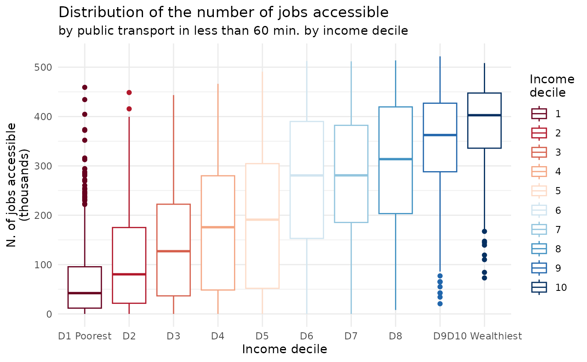

Analyzing inequality in access to opportunities
2026-01-02
Source:vignettes/access_inequality.Rmd
access_inequality.RmdSocial and racial inequalities in access to opportunities
Download accessibility data
df <- aopdata::read_access(
city = 'Curitiba',
mode = 'public_transport',
peak = TRUE,
year = 2019,
showProgress = FALSE
)Inequality in access to job opportunities by income decile
ggplot() +
geom_boxplot(data=subset(df, !is.na(R003)),
aes(x = factor(R003), y=CMATT60/1000, color=factor(R003))) +
scale_color_brewer(palette = 'RdBu') +
labs(title='Distribution of the number of jobs accessible', color="Income\ndecile",
subtitle='by public transport in less than 60 min. by income decile',
x='Income decile', y="N. of jobs accessible\n(thousands)") +
scale_x_discrete(labels=c("D1 Poorest", paste0('D', 2:9), "D10 Wealthiest")) +
theme_minimal()
Palma ratio
# average access of the wealthiest 10%
avg_access_10p_wealthiest <- df[ R003==10, weighted.mean(x=CMATT60, w=P001, na.rm=T)]
# average access of the poorest 40%
avg_access_40p_poorest <- df[ R003<=4, weighted.mean(x=CMATT60, w=P001, na.rm=T)]
# Palma ratio
palma_ratio <- avg_access_10p_wealthiest / avg_access_40p_poorest
palma_ratio
#> [1] 2.609378This means that the 10% wealthiest population could access by public transport on average 2.6 times more job opportunites than the 40% poorest people in less than 60 min.
Inequality in travel time to closes hospital
# replace Inf travel time with 120
df[, TMISA := fifelse(TMISA==Inf, 120, TMISA)]
# calculate average travel time by race
df[, .(average = weighted.mean(x=TMISA, w=P001, na.rm=T),
white = weighted.mean(x=TMISA, w=P002, na.rm=T),
black = weighted.mean(x=TMISA, w=P003, na.rm=T))]
#> average white black
#> <num> <num> <num>
#> 1: 37.124 35.75722 43.29197
# calculate average travel time by income
temp <- df[, .(average = weighted.mean(x=TMISA, w=P001, na.rm=T)), by=R003]
temp <- na.omit(temp)
ggplot() +
geom_point(data=temp, aes(y=average, x=factor(R003))) +
labs(x='Income decile', y='Avg. travel time to\nclosest hospital') +
theme_minimal()